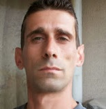

Европейски формат на автобиография |
 |
|---|---|
Лична информация |
Иван Бойков Пеев |
Трудов стаж |
2000-2006 |
Образование и обучение
|
1991-1995
Техникум по механизация на СС |
| 1 стр. | За повече информация: |
Лични умения и компетенцииПридобити в жизнения път или в професията, но не непременно удостоверени с официален документ или диплома |
to do |
Майчин език |
Български |
Други езици
|
Англииски език |
Социални умения и компетенцииСъвместно съжителство с други хора в интер културно обкръжение, в ситуации, в които комуникацията и екипнета работа са от съществено значение (например в културата и спорта) и др. |
to do |
Организационни умения и компетенцииКоординация,управление и администрация на хора, проекти и бюджети в професионалната среда или доброволни начала (например в областта на културата и спорта) и др. |
Представител на работниците във "Векта ООД" |
Технически умения и компетенцииРабота с компютри, със специфично обурудване, машини и др. |
Много добро ниво на работа с компютри |
Артистични умения и компетенцииМузикални, писмени, дизаинерски и др. |
Web design |
Други умения и компетенцииКомпетенции, които не са споменати по горе. |
to do |
Допълнителна информация |
to do |
Приложения |
to do |
| 2 стр. |